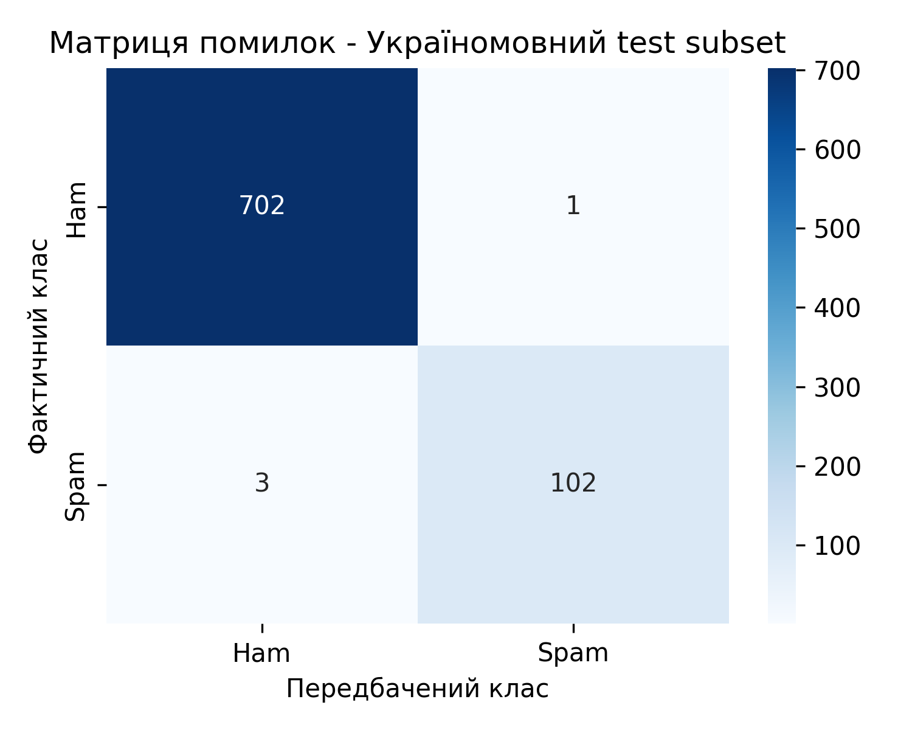
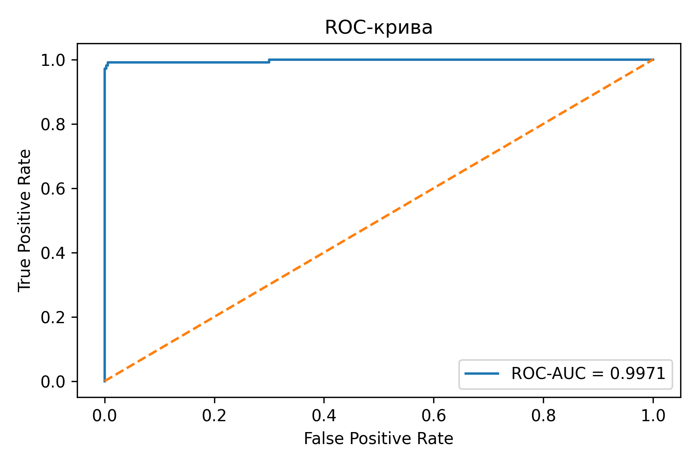
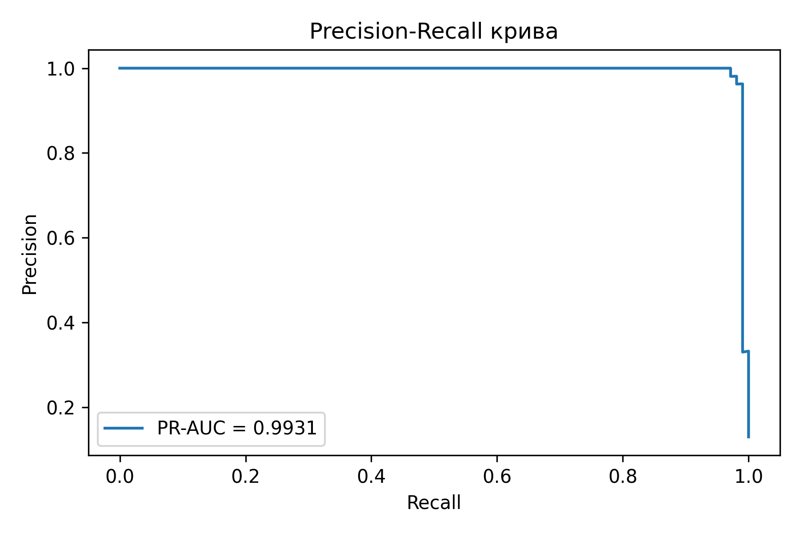

| segment | support_total | support_spam | support_ham | accuracy | precision | recall | f1 | positive_rate_pred | roc_auc | pr_auc |
|---|---|---|---|---|---|---|---|---|---|---|
| ukrainian_all_sources_test | 808 | 105 | 703 | 0.995050 | 0.990291 | 0.971429 | 0.980769 | 0.127475 | 0.997060 | 0.993107 |
| ukrainian_spam_sources_test | 797 | 105 | 692 | 0.994981 | 0.990291 | 0.971429 | 0.980769 | 0.129235 | 0.997096 | 0.993168 |
| ukrainian_ham_sources_test | 11 | 0 | 11 | 1.000000 | 0.000000 | 0.000000 | 0.000000 | 0.000000 | ||
| ukrainian_ham.csv | 11 | 0 | 11 | 1.000000 | 0.000000 | 0.000000 | 0.000000 | 0.000000 | ||
| ukrainian_spam.csv | 16 | 16 | 0 | 0.937500 | 1.000000 | 0.937500 | 0.967742 | 0.937500 | ||
| ukrainian_spam_dataset.csv | 781 | 89 | 692 | 0.996159 | 0.988636 | 0.977528 | 0.983051 | 0.112676 | 0.996606 | 0.991677 |


